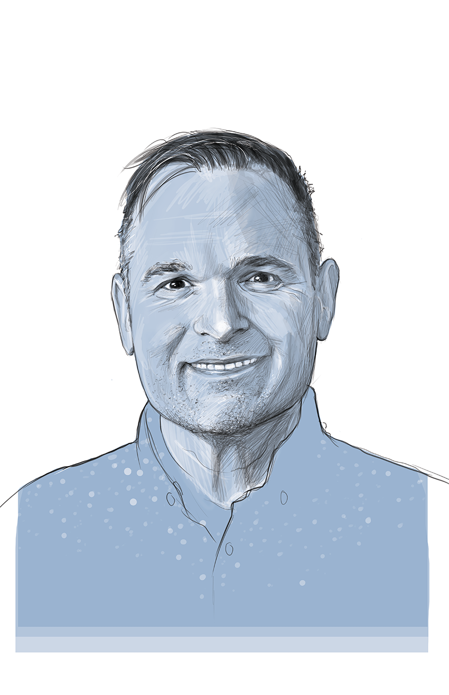

Drawing on 23+ years at the intersection of design, strategy, and innovation, Chris delivers talks that give audiences new tools for navigating the invisible forces that shape growth — and the clarity to act on what they find.
Each talk can stand alone or be sequenced for a deeper engagement. All are available as keynotes, breakout sessions, workshops, or panel conversations.
Most organizations don't fail to grow because they lack good ideas. They fail because the real barriers are invisible — buried in patterns, structures, and beliefs that no one is naming out loud. This talk uses the iceberg model to show why surface-level fixes almost never hold, and what it actually takes to move an organization forward.
The Iceberg Model: Events → Patterns → Structures → Beliefs. The deeper the layer, the greater the impact — and the harder the change.
The world feels more volatile, uncertain, complex, and ambiguous than ever — but VUCA is often an excuse, not an explanation. This talk gives teams a practical system for moving from chaos to order: recognizing patterns in the external landscape before competitors do, and using the Trend Curve to make more strategic, better-timed decisions.
Watch the talk →The Trend Curve: Emerge → Pre-Peak → Peak → Post-Peak → Decline. Understanding where a trend sits determines when and how to move.
Past success is a gift — and a trap. The more it defines who you are, the harder it becomes to try anything that might fail. Drawing on his own experience navigating this tension, Chris explores how attachment to past wins quietly shrinks the space for future exploration — and what it actually takes to move through that fear rather than around it.
Watch the talk →Attachment to past success isn't just nostalgia — it's a form of fear. When your identity is tied to what you've already done, the risk of trying something new feels like a risk to who you are.
"The world seems uncertain. If you start recognizing patterns, fear disappears."
— Tony Robbins, cited in Tracking Trends
Chris doesn't present theory at audiences — he brings frameworks people can use the same week. Every talk is built around the conviction that real change requires seeing the system, not just the symptoms.
Every talk leaves audiences with a model they can apply immediately — the iceberg, the trend curve, the courage reframe. Not inspiration that fades, but tools that travel.
The most important dynamics in organizations are the ones no one is talking about out loud. These talks give language to the invisible — so teams can finally have the conversations that matter.
Leaders aren't blocking growth on purpose. Teams aren't resisting change because they're difficult. The framing is always systemic — good-faith people in systems that aren't moving.
Each talk adapts for innovation teams, org development practitioners, HR and talent leaders, and executive audiences — without losing its core insight or punch.
Presented "What Lies Beneath the Surface of Growth?" to product and innovation professionals in Minneapolis, MN.
Delivered a talk and hands-on workshop session on strategic trend tracking using the Trend Curve for product teams.
Invited to speak as part of the Design in 7 speaker series alongside practitioners from across design disciplines.
Watch the talk →All three talks are available as keynotes, breakout sessions, workshops, or panel conversations. Contact to discuss formats, audience fit, and availability.
Each talk adapts to your format and audience without losing its core framework. All formats include Q&A and takeaway resources.
Full talk with framework, real-world examples, and audience application. Ideal for conferences and leadership offsites.
Focused version with group discussion built in. Great for conference tracks, team events, and lunch sessions.
Immersive session where teams apply the framework to their own organization. Includes diagnostic exercises and action planning.
Chris brings any of these frameworks as a lens to panel discussions on innovation, growth, and organizational change.
All three talks can be sequenced across a conference, offsite, or multi-session program for a deeper, connected experience.
Chris is the founder of The Von Collaborative, a growth consulting practice built on the belief that the organizations that grow most sustainably are building the future differently — not just executing differently.
He brings 23+ years of experience across design consulting, corporate product development, innovation lab leadership, corporate strategy, design thinking education, startup building, and team leadership. He spent years inside large organizations watching good people work hard inside systems that weren't built to support growth — and turned that experience into frameworks others can use.
His clients have included Target, Georgia-Pacific, Lakeshore Learning, and others navigating the gap between wanting to grow and knowing how. He speaks at the intersection of systems thinking, organizational design, and innovation strategy.
Trained as an industrial designer. Always on the lookout for amazing doughnuts.
